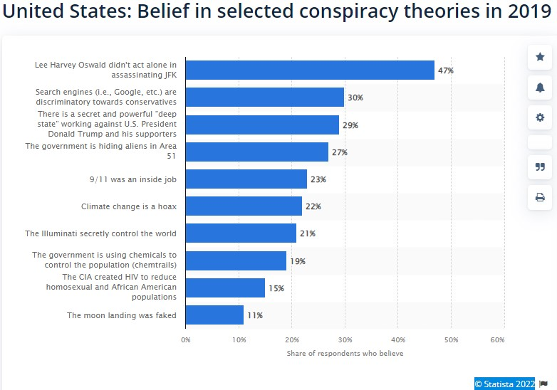

My learning style is Multimodal. This learning style uses all senses, such as the auditory, visual, and kinaesthetic. Identifying this means I can focus on using different methods of knowledge which can help me study better. It is essential to know what works for you as a person as this can reflect on your awareness. When working in a team, I understand the project and present different ideas, making me a valued team member. This type of learning can influence my behaviour in a group as I can appreciate graphs and specific tasks.
The app would be a source of information with a database with articles debunking conspiracy theories backed up by relevant research papers and scientific facts. With this app, users would search for any debunked conspiracy theories with the necessary facts, such as articles and documents backed up by research.
In modern society, there is much misinformation about what is going on. It is easy to see a pattern in anything; even just by looking at clouds, we tend to create visuals that are not there. My idea would make it easier for anyone to find the facts. There are no statistics in Australia about how many Australians believe in conspiracy theories. On the other hand, according to the market leader Statista in "the provision of reliable business data" (Statista 2022), 23% of the population in the US believes that climate change is a hoax. As shown in Figure 4, the Graph from Statista 2020. I think that it would be a helpful app against time-wasting arguments with people who did not do enough research about the topic they are so eager to discuss. Just by opening this app and using the search tab to find a debunked conspiracy theory, just a touch away from the bitter truth. One of the best features would be that users will also be able to contribute. Voluntarily completing a survey which could help add more new features to the app. Users will also be able to send suggestions to add conspiracy theories that have not been added to the app yet.
I think that it would be a helpful app against time-wasting arguments with people who did not do enough research about the topic they are so eager to discuss. Just by opening this app and using the search tab to find a debunked conspiracy theory, just a touch away from the bitter truth. One of the best features would be that users will also be able to contribute. Voluntarily completing a survey which could help add more new features to the app. Users will also be able to send suggestions to add conspiracy theories that have not been added to the app yet.
I would use Android Studio for this app, with Kotlin as the primary programming language. For the database, I would use SQL Lite. There are many helpful resources for building apps with instructions and tutorials. It can give some new ideas and help with the project. Tutorials on how to make apps are also available on YouTube. Or open-source code from GitHub can provide more ideas and solutions to our code. A computer with basic specs is the minimum requirement.
I would use Android Studio for this app, with Kotlin as the primary programming language. For the database, I would use SQL Lite. There are many helpful resources for building apps with instructions and tutorials. It can give some new ideas and help with the project. Tutorials on how to make apps are also available on YouTube. Or open-source code from GitHub can provide more ideas and solutions to our code. A computer with basic specs is the minimum requirement.
It could change the way people communicate information to each other. If this app becomes successful, it will benefit many people worldwide. A successful outcome would be if this app idea would inspire other beginning developers to find solutions for problems with their app project. In the present, we are flooded with incredible technology and vast resources with step-by-step instructions. The more people with ideas, the more problems are to be solved. Building software was never more accessible. This is the beauty of open source and sharing knowledge for the rest of us.